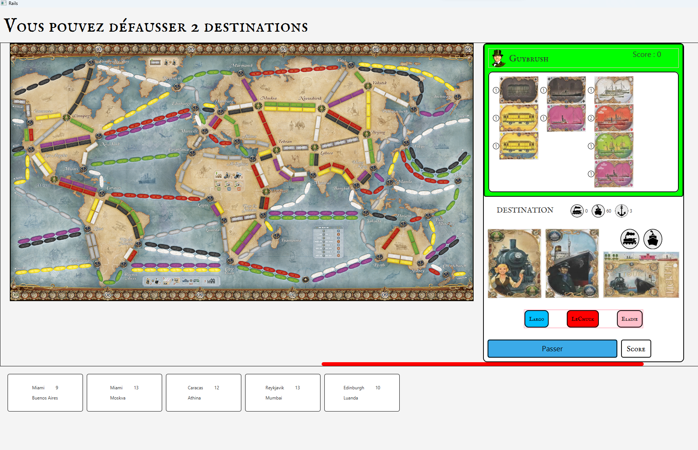

Les Aventuriers du Rail – Partie 3 : Interface Graphique
Contexte du Projet
Cette dernière phase du projet Les Aventuriers du Rail visait à développer une interface graphique en JavaFX pour le jeu de plateau. La logique de jeu, déjà implémentée lors de la Phase 1, a été encapsulée pour interagir avec l'IHM.
L'objectif était de fournir une expérience utilisateur fluide et interactive, en exploitant les fonctionnalités de JavaFX pour afficher et gérer les différents éléments du jeu.
Méthodes de Travail et Résultats
Nous avons suivi une méthodologie centrée sur l'implémentation progressive des composants graphiques. Les outils utilisés incluent :
- GitLab pour la gestion de version.
- Scene Builder pour la conception des vues JavaFX.
- IntelliJ IDEA comme environnement de développement principal.
Résultats obtenus
- Création d'une interface utilisateur ergonomique et intuitive.
- Intégration des vues telles que le plateau de jeu, les cartes de transport et la gestion des joueurs.
- Mise en place des interactions dynamiques, comme la sélection des routes et l'affichage des scores.
Preuves Visuelles



Technologies Utilisées
- JavaFX pour l'interface graphique.
- CSS pour le stylisme des composants.
Compétences Mobilisées
- C1 : Réaliser un développement d'application
- Création et gestion des composants graphiques JavaFX.
- Développement de fonctionnalités interactives.
- C2 : Concevoir des interfaces utilisateur
- Implémentation d'une IHM responsive et intuitive.
- Utilisation de binding et de gestionnaires d'événements pour synchroniser l'interface avec la logique de jeu.
- C5 : Conduire un projet
- Planification des tâches et respect des échéances.
- Collaboration efficace avec l'équipe pour intégrer les différentes fonctionnalités.
- C6 : Collaborer au sein d’une équipe informatique
- Utilisation de GitLab pour la gestion collaborative du code.
- Participation active aux revues de code et aux tests.